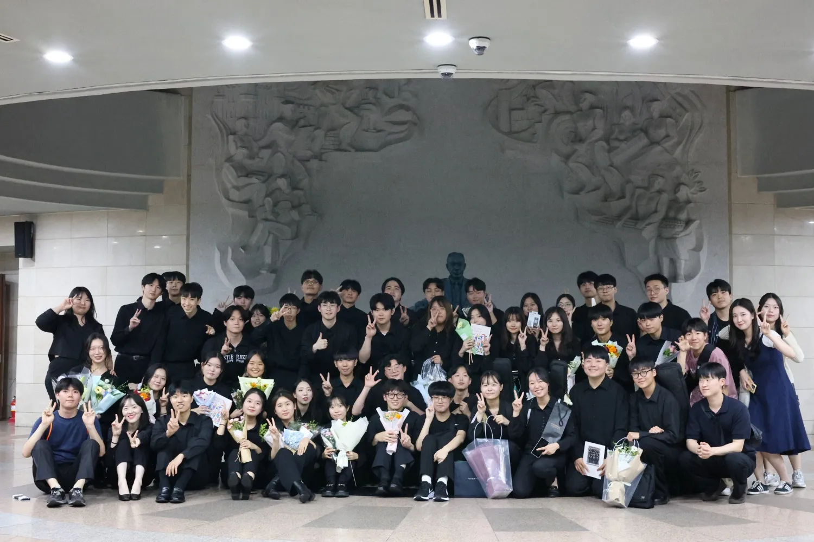
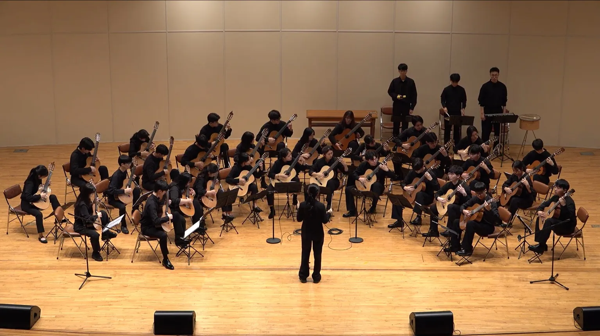
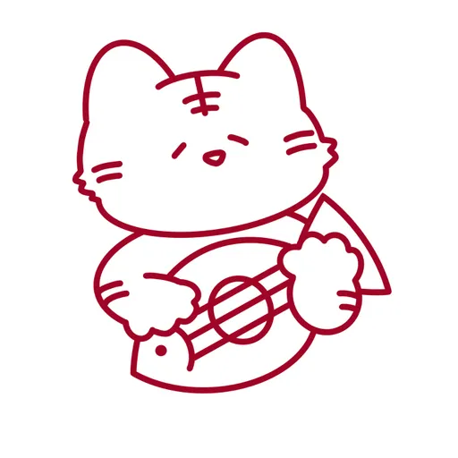
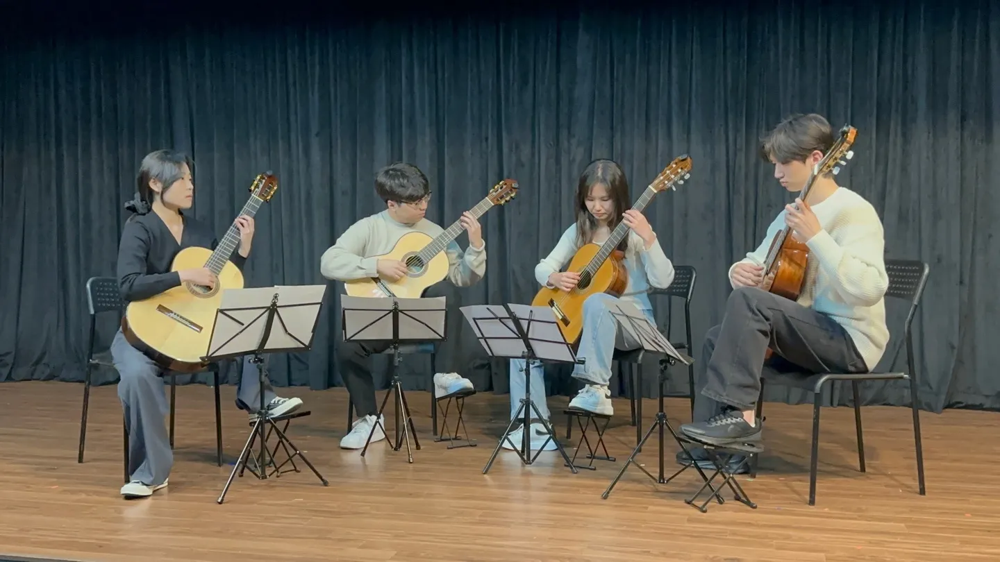
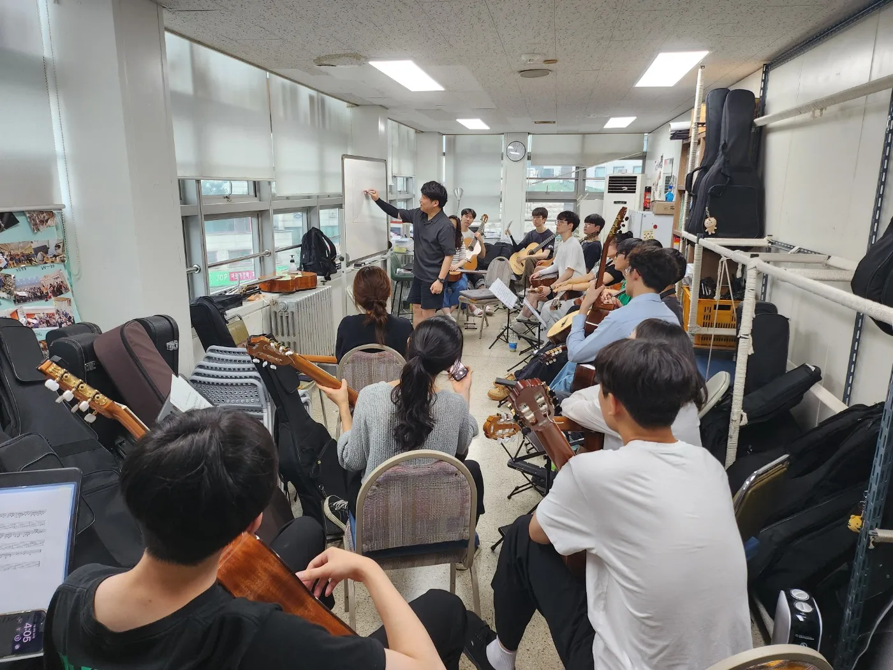
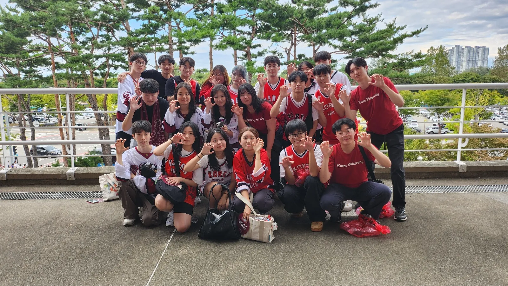
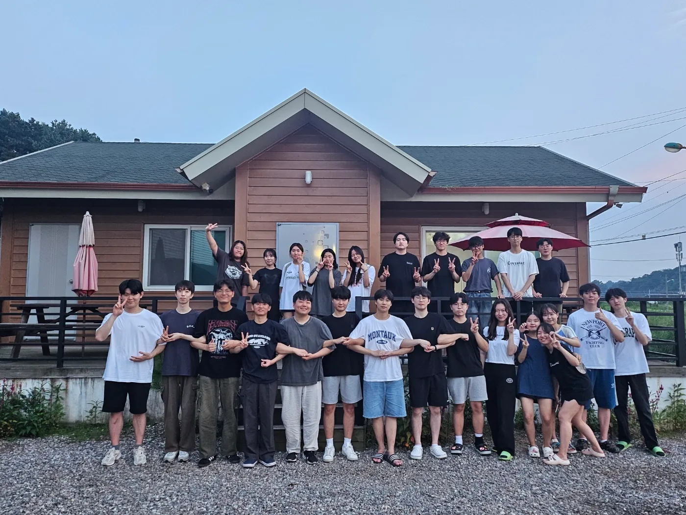

3월 · 9월
신입생환영연주회 · 정기연주회
방학 동안 준비해 올리는 정규 무대. 독주, 중주, 합주를 선보입니다.


고전기타부는 1974년 창립된 고려대학교 클래식기타 동아리입니다. 매년 봄과 가을, 방학 동안 준비한 무대를 올리고, 졸업 후에도 교우연주회로 선후배가 함께 연주합니다.
정규 연주회부터 작은 살롱, MT와 고연전까지. 고전기타부의 한 해는 이렇게 흘러갑니다.

방학 동안 준비해 올리는 정규 무대. 독주, 중주, 합주를 선보입니다.

1부는 신입부원 연주팀, 2부는 기존 부원 연주팀이 채우는 작은 연주회입니다.

처음 기타를 잡는 신입부원도 선배들의 레슨으로 무대에 설 수 있습니다.

연세대 클래식기타 동아리 오르페우스와 함께 교류합니다.

분기별 MT와 연말 칵테일파티로 부원끼리 더 가까워집니다.
졸업한 교우들이 다시 모여 무대에 오릅니다. 1982년부터 이어온 전통입니다.